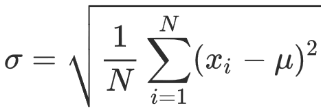

雑談
おまけ: 見なけりゃ損する、という YouTube チャンネル (英語)。
- Mark Rover (機械工作)
- 3blue1brown (数学の視覚化)
- Minutes Physics (身近な物理学)
- Simone Giertz (おバカなロボット製作)
- Veritasium (身近な物理現象)
- Practical Engineering (土木工学、都市工学)
0. 前回までのあらすじ
- LaTeX 演習をおこなった。
- 表の埋め込み。
- 図表へのリンク追加。
- 中課題の説明をした。
1. プレゼンで唯一覚えるべきこと
- たいていの講演・授業で、人は1個のことしか覚えてくれない。
- いちばん重要な主張を一言でまとめる。
- 他はすべて捨てる。
-
できるだけ少ない文字数ですむよう努力する。
1文字でも短かく! - 正確さは多少犠牲になる。
- 新聞やニュースのやり方を見習おう。
- いわゆる「エレベータートーク (エレベータに乗ってる間に話が終わる)」を心がける。
- いちばん重要な主張を一言でまとめる。
つまるところ、「プレゼンの技術」 = 「いちばん重要な部分を見つける技術」といえる。 これさえできれば、プレゼンの作成などは簡単で、 大して時間をかける必要はない。
(なので、本授業では授業中の時間だけを使ってプレゼン作成する練習をおこなう)
2. プレゼンで覚えなくていいこと
- 「プレゼンの極意」のような本にある、
数百個の規則。
- そんなの意識しながらやってたら面倒。
- そのうち自分で勝手に覚えるので大丈夫。
- プレゼンの見た目をオシャレにする技術。
- 「見た目」をよくする技術は、すぐに覚えられる。(PowerPointの超絶技巧とか)
- 「中身」をよくするには、経験と時間が必要。
演習7-1. 要約の練習1
- 「走れメロス」の物語を一言で表せ。
- 悪い例:
メロスは走った。 - 良い例:
- 悪い例:
演習7-2. 要約の練習2
- 「走れメロス」のあらすじを3つの文で述べよ:
- ...
- ...
- ...
演習7-3. 要約の練習3
- 以下の文章を、なるべく短い言い回しにせよ:
- 運動しているものは、外部から力が働かない限り、等速で運動しつづける。
- あたりが暗いときはライトをつけよ。あたりが暗くないときはライトを消せ。
- 東工大は、大岡山・すずかけ台・田町の3箇所にキャンパスがあります。
3. PowerPointの使い方
- 「新しいプレゼンテーション」を選ぶ。
- 新しいスライド を押す。
テンプレートの1枚が挿入される。 - タイトルとテキストを入力。
画像を挿入する場合は、ファイルをドロップする。 - PowerPoint (+ Word + Excel) の特徴:
- 左クリック: 選択・移動
- 右クリック: 細かな調整
- ファイル → 保存 で保存する。
「マスター」 = 「テンプレ」である
演習7-4. マスタースライドの変更
- PowerPointで「新しいプレゼンテーションを作成」し、 スライドを3枚、挿入せよ。
- 1枚目のスライドのレイアウトをタイトル用に変更せよ。
- スライドの マスター を変更することで、 残りの2枚のスライドのレイアウトをまとめて変更せよ。
4. スライドの作成
- 自分が発表したい主張を決め、調査せよ。
- まず主旨を 1文で表せ。
- それを 3〜4個の客観的な論拠に分割せよ。
(1文字でも短かく!)- 客観的なデータ (数値) を使って説明すること。
- ダメな例: 「このアニメは面白いし画が綺麗だから見るべし」
- 良い例: 「このアニメの制作費は○○億円、興行収入は××億円であった」
- PowerPointスライドを1ページだけ作成せよ。
(図・写真は、せいぜい1つまで) - PowerPointを使わない場合は、 メモ帳にタイトルと論拠を並べるだけでもよい。(以下の例を参照)
- 発表の持ち時間は、各自約1分である。 自分のスライドを本当に1分間で喋れるか練習せよ。
プレゼン例
おことわり: 以下の主張は新山個人のものであり、東京工業大学の見解ではありません。
主張: 死刑制度は悪である。
- 法律の目的: 犯罪を減らすこと。復讐ではない。
- 専門家の88% 「死刑は犯罪を防止しない」
- 世界 105カ国では廃止されている。
主張: ニューヨークには安くてうまい食い物がある
- Mamoon の Falafel: $2
- Gray Papaya のホットドッグ: $1.25
- チャイナタウンの餃子: 5個で $1
主張: 最近の若者は昔より良くなっている
- 若者の暴力・事故は減少している。
- 10代〜20代の99%がインターネットを使用。
- 若い人ほど環境問題に対する意識が高い。
参考: 2021年の学生によるプレゼンテーション一覧 (順不同)
- 香川県ゲーム条例は必要ない
- Zoomの授業と対面授業を同じ日にやるべきでない
- ガソリン車禁止を見送るべき
- ゲーム業界は拡大している
- STAR WARSを見るべき
- コロナ禍の都営地下鉄利用者数
- 大谷選手の活躍には通訳の水原さんの力が必要
- 川辺川ダムは建設すべき
- オペラを見るべき！
- 芥川龍之介はキリスト教に関心があった
- 水球日本代表の躍進
- 買い物時はドラッグストアに行くべき
- 川崎フロンターレを応援すべき
- レジ袋有料化は効果的である
- 超熱い！メダル期待！110mハードル！
- 音楽は健康にいい
- 相鉄線は神奈川で一番便利な鉄道
- チズケの三階にも男子トイレ作れ
- 日本の貧富の差は拡大している
- LaTeXとWord
- いらすとやの素材は使い勝手がいい。
- 日本もサマータイムを導入するべきである
- トマトジュースを毎日飲むべきだ
- 神椿スタジオは最強のアーティスト集団である！
- 大学の授業料を減額すべきだ
- NARUTOは読むべし
- 日本で昆虫食の習慣を広げるべきである
- PayPay決済は便利
- 副都心線は強い！
- 六フッ化キセノンの形状について
- 東京オリンピックは秋開催にするべき
- ゲーム条例の廃止
- 音楽ストリーミングサービスを使うべき
- 東工大はZoom授業を続けるべきだ
- 政府は教育に金をかけよ
- 主張：ソフトテニスをやってみよう！
- コロナワクチンは打つべきではない！
- 久保建英は日本代表に必要である。
- エアコンはつけるべき
- 授業はオンラインにすべき
- 剣道のテレビ放送を増やすべきだ
- もっとDiscordを活用しよう！
- サマータイムレンダ
- 東工大に合格するのに英語はいらない
- ダイエットには阿波踊りが最も効果的
- 福岡のとんこつラーメンは安い
- 龍神ＮＩＰＰＯＮの放送枠を増やすべきである
- 長篠の戦いの勝敗の決定打は鉄砲ではない
- タッチタイピングはできたほうがいい
- 髪型の自由は保障されるべき
- 朝課外は廃止すべき
- Oasisは英音楽界を揺るがしたバンドだ
- 冷房の温度設定を見直すべき
- セルティックスは5年以内に優勝する
- 国内旅行に行こう！
- 大乱闘スマッシュブラザーズは最高のゲームだ
- 遠隔授業は継続すべき
- コンパクト GamingPC - Steam Deck
- 酒類の提供の禁止は有効である
5. 発表・質問する
- まず、Zoom のブレイクアウトルームに分かれる。
- Zoomの「画面の共有」機能を使って、一人ずつ自分の資料を発表する。 発表時間は1分を目安にする。
- 各自の発表に対して、一人1回ずつ質問する。
このとき以下のものをメモに書いておく:
- 発表者の氏名
- 発表のタイトル
- 自分がした質問の内容
- 全員の発表が終わったら、メインセッションに戻る。
- 授業 終了10分前 (10:20ごろ) にブレイクアウトルームを終了するので、 それまでに全員が発表を終えるようにすること。
6. 本日のまとめ・課題2つ
- これで大学生活の 1/8 は終了しました。
残り7回です。
小課題7. LaTeXおまけ課題 (8月8日締切)
- 提出期限: 8月8日 (1週間後)
- 以下の標準偏差を求める数式を出力する
.texファイルを提出せよ。 (数式のみを表示すればよい) (5点)ヒント: σ は\sigma, μ は\muで表示される。
中課題3. 自分の発表スライドおよび質問の提出 (8月8日締切)
- 提出期限: 8月8日 (1週間後)
- 以下の 2ファイルを zip形式にまとめ、T2SCHOLA から提出せよ:
- 自分の発表に使ったスライド (Powerpoint, PDF あるいはテキスト形式)。(10点)
- 他人の発表に対する質問内容 (テキスト形式)。(10点)
このテンプレートをダウンロードして使うこと。学籍番号: 氏名: 自分の発表タイトル: 1. a. 発表者氏名: b. 発表タイトル: c. 質問の内容: ...